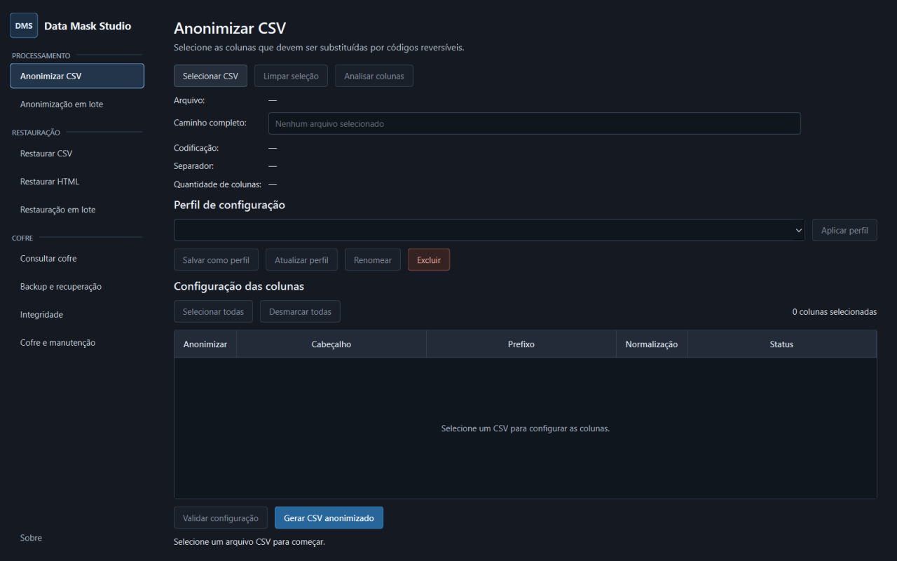

Deterministic masking
Consistent tokens preserve useful correlations between repeated values.
Open source · Windows · Local-first
Local, open-source data masking for Windows.
Work with sensitive datasets while preserving analytical correlations without directly exposing original values. Processing and controlled restoration remain in your local environment.

What is DMS?
Data Mask Studio is a Windows desktop application designed to protect sensitive data in CSV files and local HTML content. It creates deterministic tokens so repeated values can remain correlated during analysis.
Original information is kept in an encrypted local vault. Reversibility is controlled through that vault and its protected keys, rather than being a property exposed by each token.
Main features
Mask, restore, verify and maintain datasets without sending their contents to an external service.
Consistent tokens preserve useful correlations between repeated values.
Mappings and original representations remain encrypted on the local machine.
Inspect headers, configure columns, process files individually or in batches, and restore selected CSV data.
Restore known codes in local HTML files while preserving document markup.
Protect vault, key and profile backups with a password for controlled recovery.
Audit the local vault and identify structural or authentication problems safely.
Use diagnostics, temporary-file cleanup and controlled vault compaction.
No telemetry and no automatic synchronization of sensitive information.
How it works
Identifiers remain consistent when generated with the same prefix and cryptographic environment, enabling correlation across records and files. Restoration requires access to the corresponding encrypted local vault.
Security & privacy
DMS provides deterministic data masking with controlled restoration through an encrypted local vault. It does not claim that individual tokens are reversible or guarantee irreversible anonymization.
Tokens derive from keyed cryptographic authentication, incorporating the configured prefix and original value.
Original information stored in the vault is encrypted and authenticated against unauthorized changes.
Local keys are protected for the Windows user. Processing stays local, with no telemetry or automatic sensitive-data sync.
Open source
SPDX: GPL-3.0-only. Third-party components remain under their respective licenses.
Author